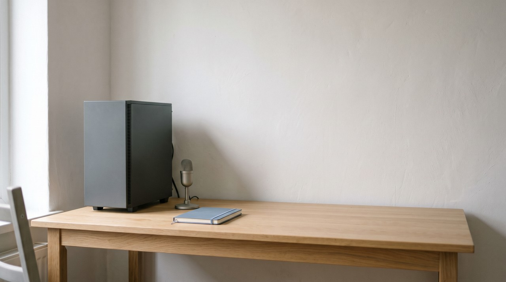
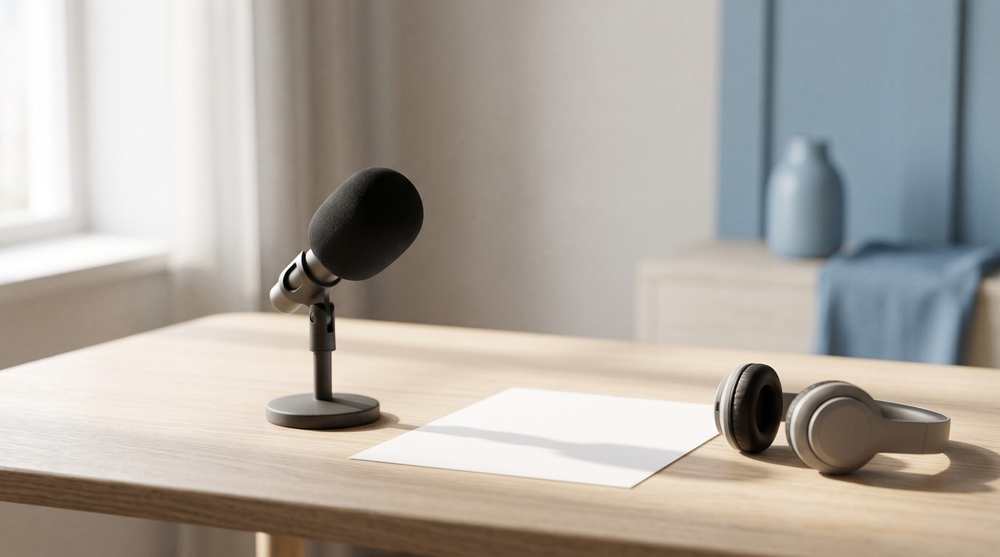

How to install VibeVoice on Windows: which copy to download, the graphics card fix, and how to add your own voice

If you want to install VibeVoice on Windows, grab the community copy from GitHub, because Microsoft took the voice cloning code off its own page. Install Python 3.11, set up a virtual environment, install the CUDA build of PyTorch first if you have an NVIDIA card, and then run pip install -e . inside the project folder. On the first run it downloads the 1.5B model, which is 5.4 GB. Microsoft labels the model as research only.
| Microsoft's official page | The community copy | A ComfyUI add-on | VoiceClone | |
|---|---|---|---|---|
| What you get | The Realtime model and the speech to text models | The 1.5B and 7B text to speech models with voice cloning | The same models as blocks inside ComfyUI | A Windows app that runs GPT-SoVITS |
| Clones your voice | No, preset voices only | Yes, from a recording you put in a folder | Yes, from a recording you load | Yes, trained on 1 to 3 minutes of your talking |
| Python setup | You install Python and make the environment | You install Python and make the environment | ComfyUI has to be installed first | None |
| How it starts | A Python script | A Python script that opens a page in your browser | Inside ComfyUI | Double click START VoiceClone.bat |
| Who looks after it | Microsoft | Volunteers | One volunteer each | Me |
| Cost | Free, MIT licence, labelled research only | Free, MIT licence, labelled research only | Free, MIT licence | One voice cloned and trained free, then $49 once |
Written by Inam. I build VoiceClone, the app in the last column, and it uses a different engine from VibeVoice, so read that column knowing I have a stake in it. The rest of my engineering work is on designesh.com. Last updated 24 November 2026.
Maybe you saw a video of VibeVoice generating a full podcast with two or three voices, and now you want to run it on your own PC. You open Microsoft's GitHub page and find that the text to speech code is missing, and the install guides online cannot agree on which page you should download from. Even after you sort that out on Windows, there is a second trap where the install finishes with no errors, but the program ends up running on your processor and ignoring your graphics card.
Download the community copy, put the CUDA build of PyTorch in first, and then run pip install -e . inside the folder. Most guides skip over that order. Below, I will walk through each step, show you where to drop your own voice recording, and be plain with you about when this setup is not worth your evening.
Which VibeVoice should you download in November 2026?
Right now there are two different GitHub pages, and they do not have the same files. Microsoft's VibeVoice page on GitHub still gets a lot of attention, with about 57,500 stars when I checked on 24 November 2026. However, its own news section states that on 5 September 2025 the team took down the VibeVoice-TTS code, and the model table lists the 1.5B text to speech model as Disabled. All that remains on Microsoft's page is the Realtime model, which only uses voices Microsoft provides, along with the speech to text models.
If you want the code that actually copies a voice, you have to use the community copy. Its opening line explains that it is a fork maintained by volunteers after the official code was removed, and they have also added their own training code. When I looked, it had about 1,700 stars, 27 open issues, and its last update was on 29 August 2026. It does the job, but Microsoft does not stand behind it, so you are running code from strangers on your own PC, and I covered the full story in what Microsoft took down.
If you want VibeVoice to talk in a voice of your own choosing, download the community copy.
What do you need before you install VibeVoice on Windows?
Before you start, you need Python, Git, and plenty of free disk space. The package officially asks for Python 3.9 or newer, but I suggest installing Python 3.11, because the project locks several of its pieces to exact 2025 versions and a brand new Python release is more likely to run into trouble with them. Git is just the small tool used to pull a project down from GitHub, though if you would rather skip installing it, you can click the green Code button on the GitHub page and use Download ZIP to get the exact same folder.
Your graphics card determines which model your PC can handle. VRAM is the memory built right onto the graphics card, and the model needs to fit inside it to run properly. The ComfyUI add-on I mention further down lists 8 GB of VRAM as the minimum for the 1.5B model and about 20 GB for the Large model, which is also called 7B. That means a 12 GB card such as an RTX 3060 can run the 1.5B model, while the full Large model asks for hardware most people simply do not have.
You will also need more disk space than you might expect. I checked the file lists on Hugging Face, which is where the models are downloaded from, and the 1.5B model takes 5.4 GB while the Large model takes 18.7 GB. PyTorch and its graphics card files add a few more GB on top of that. Plan to have 15 GB free for the small model, and 30 GB if you want to try the large one.
How do you install VibeVoice on Windows, step by step?
Open the Windows Command Prompt and type these commands one by one. First you will create a virtual environment, which is simply a separate folder holding the Python packages for this one project so VibeVoice does not interfere with any other Python tools on your PC.
- Switch to a drive that has enough room and pull the project down with
git clone https://github.com/vibevoice-community/VibeVoice.git, then move into it withcd VibeVoice. Use a short folder path with no spaces in it, likeD:\VibeVoice. - Create the virtual environment by running
py -3.11 -m venv vv, and activate it withvv\Scripts\activate. When it is active, you will see (vv) at the start of the command line. - If you have an NVIDIA card, install the graphics card build of PyTorch now:
pip install torch --index-url https://download.pytorch.org/whl/cu128. If you have no NVIDIA card, skip this step. - Install VibeVoice itself by running
pip install -e ., and make sure you include the dot at the end because that tells pip to install from the current folder. - Confirm that Python can actually see your graphics card with
python -c "import torch; print(torch.cuda.is_available())". You want it to print True. - Start it:
python demo/gradio_demo.py --model_path vibevoice/VibeVoice-1.5B. The first start downloads the 5.4 GB model, and then the window prints a local address, normally http://127.0.0.1:7860, that you open in your browser.
Step 3 has to happen before step 4 for a very practical reason. VibeVoice lists PyTorch as a requirement without specifying which build it wants. When PyTorch with graphics card support is already installed, pip sees that requirement is satisfied and leaves it untouched. If you skip step 3, pip downloads PyTorch by itself, and the Windows file it grabs from the normal package store is a small 127 MB build that only runs on your processor.
One more thing about step 6. The project's own example adds --share to that command. That option asks Gradio, the tool that draws the page, to make a public web link to your PC. Leave it off, and the page stays on your own computer.
Why is VibeVoice slow, or why does it show a flash attention error?
If everything runs very slowly, go back and run the check from step 5. If it prints False, you ended up with the processor only build of PyTorch, which is the most common reason for slow speeds on Windows. To fix it, stay inside the same virtual environment, run pip uninstall torch, and then run the command from step 3 again. There is nothing wrong with your card, it just got the wrong build.
The other thing that scares people is a long red error about flash attention the first time the model loads. Flash attention is an optional speed component that the demo tries to use first whenever it detects an NVIDIA card. I looked at its page on PyPI, which is the public store pip pulls packages from, and it only hosts source code with no ready Windows file, so most Windows PCs simply do not have it. The demo expects this, so it prints the error, prints "Falling back to attention implementation: sdpa", and keeps going using the standard method.
If you see that falling back line right after the error and the page still opens, nothing is broken and you can leave it alone.
How do you use your own voice in VibeVoice?
The README skips over how to add your own voice, and someone even opened an issue on the community page asking for these exact steps. Every time the demo starts up, it builds its speaker list by checking the demo\voices folder, where the project already includes nine sample voices in English and Chinese. I looked through the demo's code to see what formats it supports, and it accepts wav, mp3, flac, ogg, m4a, and aac files, converting each one to 24,000 Hz on its own.
Record yourself speaking clearly, drop the file into demo\voices with a plain name like en-Myname_man.wav, and restart the demo so your name shows up in the speaker list. To make audio, write your script with lines starting with Speaker 1: and Speaker 2:, assign a voice to each speaker, and press generate. My advice on recording a sample that clones well applies here as well, and a clean clip matters more than a long one because the project's own FAQ warns that background music in your recording often shows up again in the generated audio.
Only put your own voice in that folder, or the voice of someone who has clearly agreed to it. Microsoft's model page lists voice impersonation without explicit, recorded consent as something the model must not be used for.

Is there an easier way than the command line?
If ComfyUI is already part of your setup, then yes. ComfyUI is a free tool where you wire blocks together on a canvas to run AI models, and two volunteers have made VibeVoice blocks for it. VibeVoice-ComfyUI by Enemyx-net had about 1,600 stars with its last update on 18 February 2026. Starting from version 1.6.0, you download the model files manually and place them in a folder, and its README notes smaller versions of the Large model that fit into about 12 GB or about 8 GB of VRAM.
The other option is ComfyUI-VibeVoice by wildminder, which is smaller at about 600 stars, but it was updated on 26 October 2026 and installs from the ComfyUI Manager with a quick search and one click. If you do not already have ComfyUI on your PC, setting it up just to run VibeVoice takes more effort than the six steps above, so I would not go that route.
What goes wrong after VibeVoice is installed?
Before you build a real project around VibeVoice, there are a few limits you should know about. I did not run this install on my own PC tonight, so all of the points below come straight from the project's own pages and issue list.
- On Microsoft's model page for VibeVoice-1.5B, the model is marked for research and development, and Microsoft says it does not recommend it for commercial or real world use without further testing.
- That same page states that every generated audio file includes an audible disclaimer and a hidden watermark. Since I have not tested it myself, I cannot say whether the community copy still puts those in, so listen all the way through your first file before you build a video around it.
- The model was trained only on English and Chinese, and the model page notes that other languages may come out wrong.
- Random music or background noise can show up on its own, and the README explains that this happens by design and cannot be turned off directly.
- There is also an open issue on the community page noting that a cloned voice starts losing quality after about 4 to 5 minutes in a single long generation, so generating shorter sections is the safer approach.
When is installing VibeVoice not worth it?
This setup is worth your time if you want long back and forth conversations with multiple speakers, you have an NVIDIA card with 8 GB or more, and working in Python does not bother you. For that kind of work, VibeVoice handles something my own app does not, because it can keep up to 4 speakers in a single script. I also compared it side by side with Google's tool in NotebookLM or VibeVoice.
Skip it if a broken pip command will leave you stuck, because your only support is a volunteer issue list, and do not use it for paid client work while Microsoft itself labels it research only. If all you really need is your own voice reading English scripts, that is the problem I built VoiceClone to solve. It launches from a single file, START VoiceClone.bat, needs 10 to 30 minutes for the first setup along with an engine download of about 1.3 GB, and runs completely offline on Windows 10 and 11 after that. You can clone and fully train one voice for free with 3 test generations, and the full licence is a one time $49.
Go with VibeVoice if you want a multi voice podcast and you are comfortable with Python. Go with a finished app if you only need your own voice.
FAQ
Is VibeVoice free to install?
Yes, both the code and the models are free under the MIT licence, and you do not need an account to download them. Just remember that Microsoft still labels the model for research and development and does not recommend it for commercial use without more testing.
How much VRAM does VibeVoice need?
According to the ComfyUI add-on's README, you need at least 8 GB of VRAM for the 1.5B model and about 20 GB for the full Large model. The same README also mentions smaller versions of the Large model that take about 12 GB or about 8 GB.
Can VibeVoice run without an NVIDIA graphics card?
It will start on your processor because the demo automatically falls back to it when no card is found. Expect it to be very slow that way, since even the small model is a 5.4 GB file, so an NVIDIA card with 8 GB of VRAM is the realistic minimum.
Does VibeVoice need the internet after it is installed?
You only need an internet connection for the pip commands and for the first launch, when the model is downloaded from Hugging Face. Once those files are sitting on your disk, it runs locally on your PC as long as you leave the share option off.
Sources: the microsoft/VibeVoice README and its Realtime guide on GitHub, the vibevoice-community/VibeVoice README, its pyproject.toml settings file, its demo code and its open issues, the VibeVoice-1.5B model page and the file lists for the 1.5B and 7B models on Hugging Face, the torch and flash-attn pages on PyPI, PyTorch's Windows download folder for CUDA 12.8, and the READMEs of the two ComfyUI add-ons. I read every one of them on 24 November 2026. VoiceClone facts are from the product page on myvoiceclones.com.
Hear your own voice come back.
The free Windows app clones and fully trains one voice, yours, on your own PC. No account, no upload, and the download starts right away.